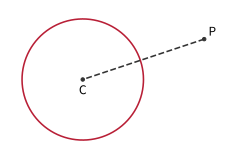
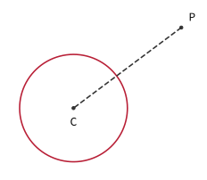
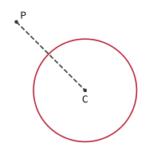

別冊練習問題 7 の解答 外部の点から円への接線の長さ
(1) 円 \((x-2)^2+(y+1)^2=9\) の外部の点 \(P(8,1)\) から円に引いた接線の長さ（\(P\) から接点までの距離）を求めよ。
直角三角形をつくる
接点を \(T\) とすると \(CT\perp PT\)。三平方の定理。

距離
\[PC^2=(8-2)^2+(1+1)^2=40\]
接線の長さ
\[PT^2=PC^2-r^2=40-9=31,\qquad PT=\sqrt{31}\]【答案】
\[\sqrt{31}\]答
(2) 円 \((x-1)^2+(y-2)^2=4\) の外部の点 \(P(5,5)\) から円に引いた接線の長さ（\(P\) から接点までの距離）を求めよ。
直角三角形をつくる
接点を \(T\) とすると \(CT\perp PT\)。三平方の定理。

距離
\[PC^2=(5-1)^2+(5-2)^2=25\]
接線の長さ
\[PT^2=PC^2-r^2=25-4=21,\qquad PT=\sqrt{21}\]【答案】
\[\sqrt{21}\]答
(3) 円 \((x-1)^2+(y)^2=9\) の外部の点 \(P(-3,4)\) から円に引いた接線の長さ（\(P\) から接点までの距離）を求めよ。
直角三角形をつくる
接点を \(T\) とすると \(CT\perp PT\)。三平方の定理。

距離
\[PC^2=(-3-1)^2+(4-0)^2=32\]
接線の長さ
\[PT^2=PC^2-r^2=32-9=23,\qquad PT=\sqrt{23}\]【答案】
\[\sqrt{23}\]答